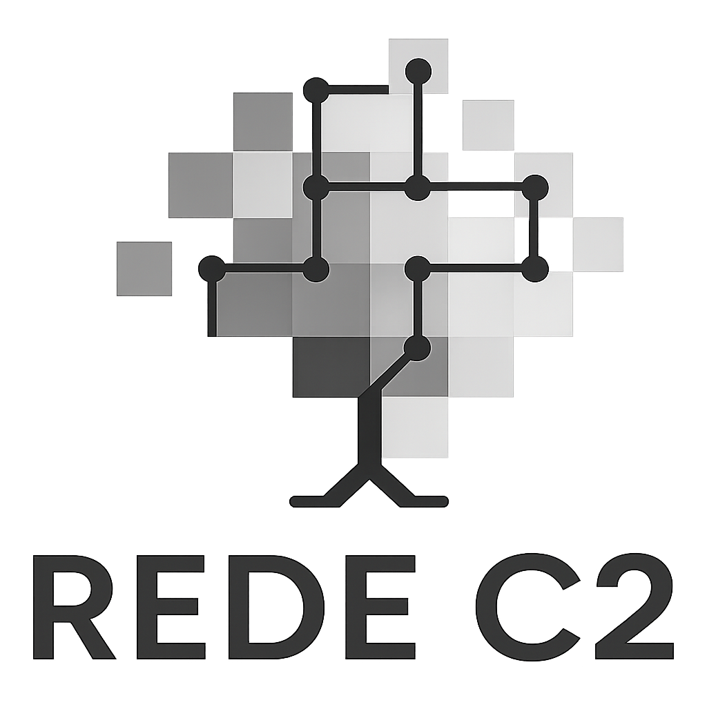

Protocols
Field methods, manuals and compatible monitoring workflows for Rede C2 and partner networks

<img src="../figures/canudos_dc.jpg" class="carousel-img" alt="Canudos">
<img src="../figures/gruta_brejoes_dc.jpg" class="carousel-img" alt="Gruta dos Brejões">
<img src="../figures/s_francisco_dc.jpg" class="carousel-img" alt="São Francisco">
<img src="../figures/agua_limpa.jpg" class="carousel-img" alt="Água Limpa">
<img src="../figures/itirapina.jpg" class="carousel-img" alt="Itirapina">
<img src="../figures/itirapina_.jpg" class="carousel-img" alt="Itirapina 2">
<img src="../figures/agua_limpa_.jpg" class="carousel-img" alt="Água Limpa 2">
<img src="../figures/agua_limpa_1.jpg" class="carousel-img" alt="Água Limpa 3">
<img src="../figures/canudos_dc.jpg" class="carousel-img" alt="Canudos 2">
<img src="../figures/gruta_brejoes_dc.jpg" class="carousel-img" alt="Gruta dos Brejões 2">
<img src="../figures/s_francisco_dc.jpg" class="carousel-img" alt="São Francisco 2">
<img src="../figures/agua_limpa.jpg" class="carousel-img" alt="Água Limpa 2">
<img src="../figures/itirapina.jpg" class="carousel-img" alt="Itirapina 2b">
<img src="../figures/itirapina_.jpg" class="carousel-img" alt="Itirapina 2c">
<img src="../figures/agua_limpa_.jpg" class="carousel-img" alt="Água Limpa 2b">
<img src="../figures/agua_limpa_1.jpg" class="carousel-img" alt="Água Limpa 3b">
<img src="../figures/canudos_dc.jpg" class="carousel-img" alt="Canudos 3">
<img src="../figures/gruta_brejoes_dc.jpg" class="carousel-img" alt="Gruta dos Brejões 3">
<img src="../figures/s_francisco_dc.jpg" class="carousel-img" alt="São Francisco 3">
<img src="../figures/agua_limpa.jpg" class="carousel-img" alt="Água Limpa 3">
<img src="../figures/itirapina.jpg" class="carousel-img" alt="Itirapina 3">
<img src="../figures/itirapina_.jpg" class="carousel-img" alt="Itirapina 3b">
<img src="../figures/agua_limpa_.jpg" class="carousel-img" alt="Água Limpa 3b">
<img src="../figures/agua_limpa_1.jpg" class="carousel-img" alt="Água Limpa 3c"><span class="badge badge-caatinga">Caatinga</span>
<span class="badge badge-cerrado">Cerrado</span>
<span class="badge badge-network">Protocols</span>Standardized protocols are the backbone of long-term monitoring: they keep data comparable across sites, teams and years.
Rede C2 works with permanent plots in dry ecosystems and connects with broader monitoring initiatives. This page gathers core protocol references that can support plot establishment, remeasurement, field standardization, data harmonization and cross-network comparability.
The DRYFLOR field manual is especially relevant for Rede C2 because it offers a standardized workflow for permanent plots in seasonally dry tropical forests, including plot layout, tagging, remeasurement and woody stem monitoring.Core protocol references
<div class="proto-card">
<div class="proto-title">Rede C2</div>
<div class="proto-subtitle">Network base</div>
<p>
Space for Rede C2’s own protocols, field sheets and coding standards for plot installation, recensus, disturbance records, traits and soils.
</p>
<div class="proto-links">
<a class="pill" href="plot-establishment.html">Plot protocol</a>
<a class="pill pill-green" href="datasheets.html">Datasheets</a>
<a class="pill pill-amber" href="field-codes.html">Field codes</a>
</div>
</div>
<div class="proto-card">
<div class="proto-title">DRYFLOR field manual</div>
<div class="proto-subtitle">Dry forest permanent plots</div>
<p>
A key manual for establishing and remeasuring permanent plots in seasonally dry tropical forests. It is especially useful for woody stems, tagging rules and long-term comparability.
</p>
<div class="proto-links">
<a class="pill" href="https://www.dryflor.info/files/Protocol_v1.2_English.pdf" target="_blank" rel="noopener">English</a>
<a class="pill pill-green" href="https://doi.org/10.5521/forestplots.net/2020_4c" target="_blank" rel="noopener">Português DOI</a>
<a class="pill" href="https://www.dryflor.info/files/Protocol_v1.2_Spanish.pdf" target="_blank" rel="noopener">Español</a>
</div>
</div>
<div class="proto-card">
<div class="proto-title">ForestPlots.net</div>
<div class="proto-subtitle">Field resources and manuals</div>
<p>
ForestPlots.net provides field resources, publications and practical material that support tropical plot monitoring and interoperability across networks.
</p>
<div class="proto-links">
<a class="pill" href="https://forestplots.net/en/using-forestplots/in-the-field" target="_blank" rel="noopener">In the field</a>
<a class="pill pill-green" href="https://forestplots.net/en/publications" target="_blank" rel="noopener">Publications</a>
</div>
</div>
<div class="proto-card">
<div class="proto-title">SECO</div>
<div class="proto-subtitle">Dry tropics compatibility</div>
<p>
SECO connects dry tropics monitoring initiatives and provides protocol pages and modules that align with DryFlor, ForestPlots and related networks.
</p>
<div class="proto-links">
<a class="pill" href="https://blogs.ed.ac.uk/seco-project/science/protocols/" target="_blank" rel="noopener">Protocols page</a>
<a class="pill pill-green" href="https://bitbucket.org/miombo/seosaw/raw/master/doc/manuals/soil_manual/versions/SECO_soil_protocol_latest_pt.pdf" target="_blank" rel="noopener">Soils PT</a>
<a class="pill" href="https://blogs.ed.ac.uk/seco-project/wp-content/uploads/sites/2074/2022/08/seco_leaf_traits.pdf" target="_blank" rel="noopener">Leaf traits</a>
</div>
</div>
<div class="proto-card">
<div class="proto-title">SEOSAW</div>
<div class="proto-subtitle">Linked woodland modules</div>
<p>
SEOSAW offers interoperable protocols and datasheets for woodland monitoring, useful as a methodological reference for compatible modules and workflow design.
</p>
<div class="proto-links">
<a class="pill" href="https://seosaw.github.io/manuals.html" target="_blank" rel="noopener">Protocols</a>
</div>
</div>
<div class="proto-card">
<div class="proto-title">Recommended citation anchor</div>
<div class="proto-subtitle">DRYFLOR Portuguese manual</div>
<p>
This DOI can be used as a stable citation anchor when referring to the Portuguese DRYFLOR field manual in Rede C2 methods and protocol references.
</p>
<div class="proto-links">
<a class="pill pill-amber" href="https://doi.org/10.5521/forestplots.net/2020_4c" target="_blank" rel="noopener">DOI</a>
</div>
</div>Suggested Rede C2 sections
<div class="proto-card">
<div class="proto-title">Plot establishment and remeasurement</div>
<p>
Plot geometry, subplot layout, coordinates, tagging, recensus intervals and replacement rules.
</p>
<div class="proto-links">
<a class="pill" href="plot-establishment.html">Open</a>
</div>
</div>
<div class="proto-card">
<div class="proto-title">Woody stems census</div>
<p>
Diameter standards, multiple stems, damage codes, recruits, mortality and field note structure.
</p>
<div class="proto-links">
<a class="pill" href="woody-census.html">Open</a>
</div>
</div>
<div class="proto-card">
<div class="proto-title">Herb layer and regeneration</div>
<p>
Modules for herbs, seedlings and regeneration tracking compatible with dry-forest and savanna workflows.
</p>
<div class="proto-links">
<a class="pill" href="herb-layer.html">Open</a>
</div>
</div>
<div class="proto-card">
<div class="proto-title">Soils, traits and disturbance</div>
<p>
Optional compatible modules inspired by partner networks to maximize interoperability and ecological interpretation.
</p>
<div class="proto-links">
<a class="pill" href="soils.html">Soils</a>
<a class="pill pill-green" href="traits.html">Traits</a>
<a class="pill pill-amber" href="disturbance.html">Disturbance</a>
</div>
</div>